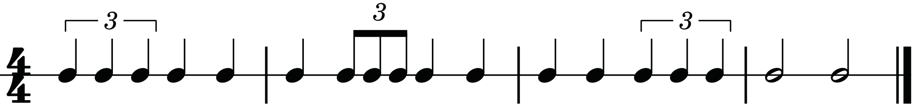
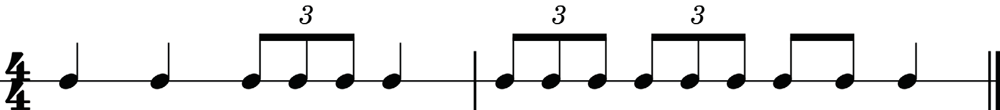
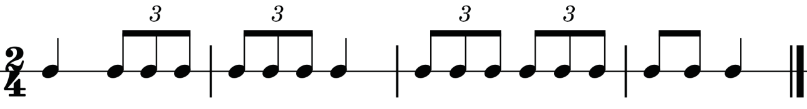
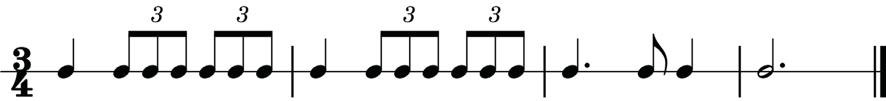

One trip–let Three four
One two-trip-let Three four
One two Three trip–let
One Three
One la li Three four
One two -la -li Three four
One two Three la li
One Three
Clap Clap clap
Clap clap Clap clap
Clap clap Clap
Clap Clap
Figure 1.3: Counting triplets using numbers followed by words “triplet” and “la li”
Additionally, syllables such as “ta te ti”, “ta ke ti” and others can be used when counting triplet beats. In both cases (counting by numbers or syllables), the division of triplets should be in equal parts. Figures 1.4, 1.5 and 1.6 show how to count triplets using syllables.

Ta ta
Ta - te - ti ta
Ta - te - ti ta - te - ti
Ta - te ta
Ta ta
Ta - ke - ti ta
Ta - ke - ti ta - ke - ti
Ta - te ta
Clap clap
Clap clap
Clap clap
Clap clap
Figure 1.4: Counting triplets using syllables

Ta
ta - te - ti
Ta - te - ti ta
Ta- te - ti ta - te - ti
Ta - te ta
Ta
ta - ke - ti
Ta -ke - ti ta
Ta - ke - ti ta - ke - ti
Ta - te ta
Clap clap
Clap clap
Clap clap
Clap clap
Figure 1.5: Counting triplets using syllables

Ta
ta - te -ti ta -te -ti
Ta
ta -te -ti ta -te -ti
Ta - a te ta
Ta - a - a
Ta
ta - ke -ti ta -ke -ti
Ta
ta -ke -ti ta -ke -ti
Ta - a te ta
Ta - a - a
Clap clap clap
Clap clap clap
Clap clap
Clap
Figure 1.6: Counting triplets using syllables